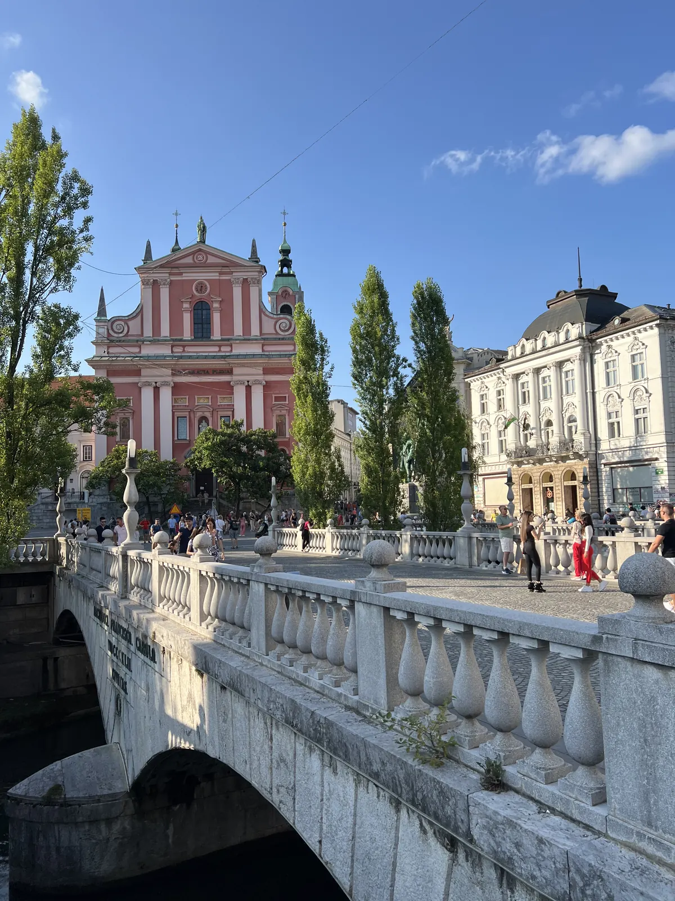
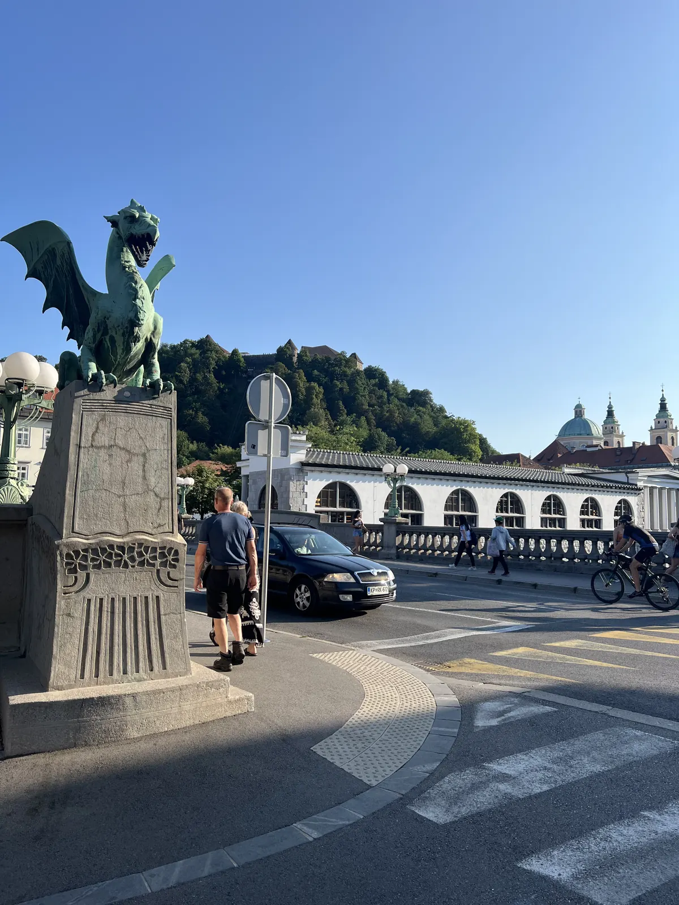
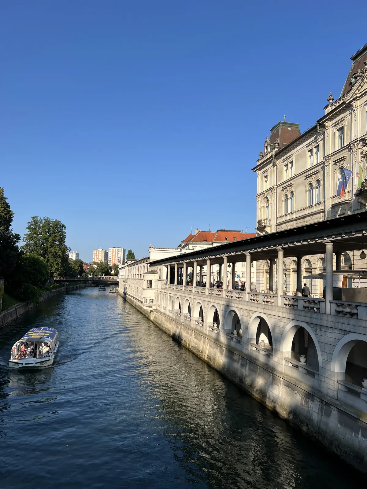
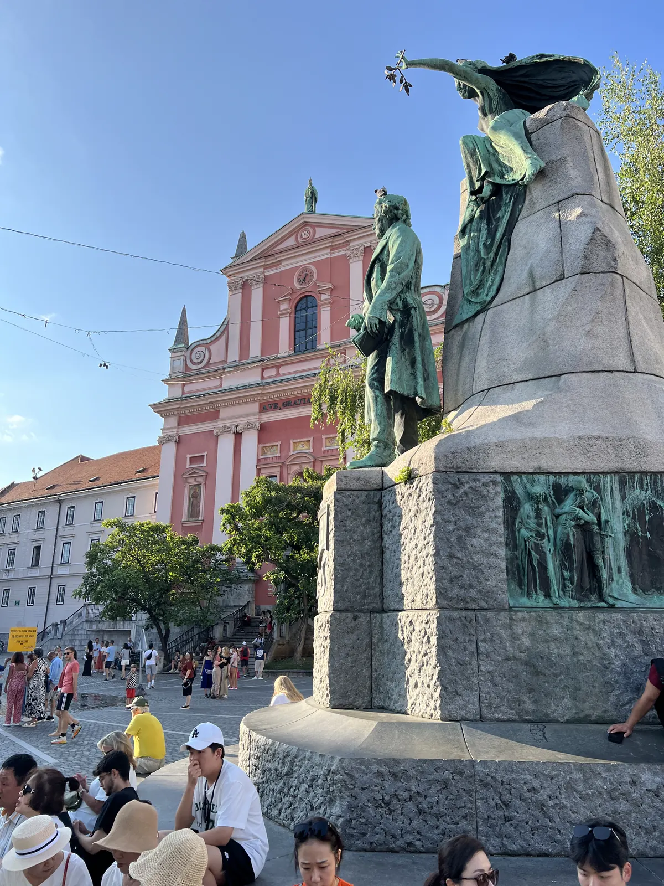
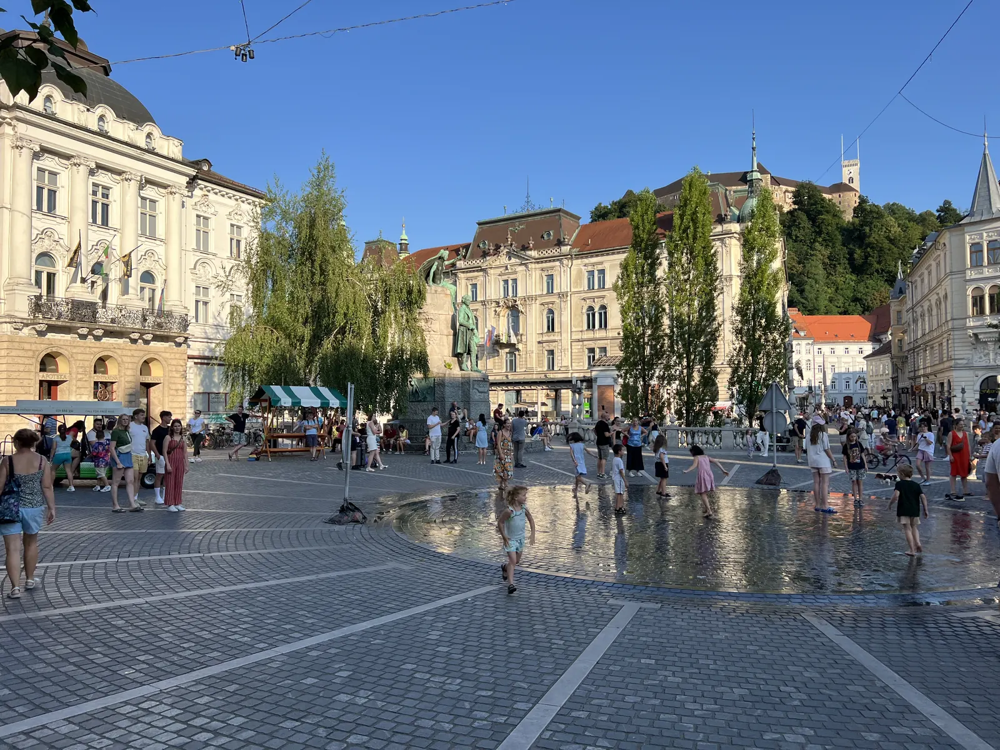
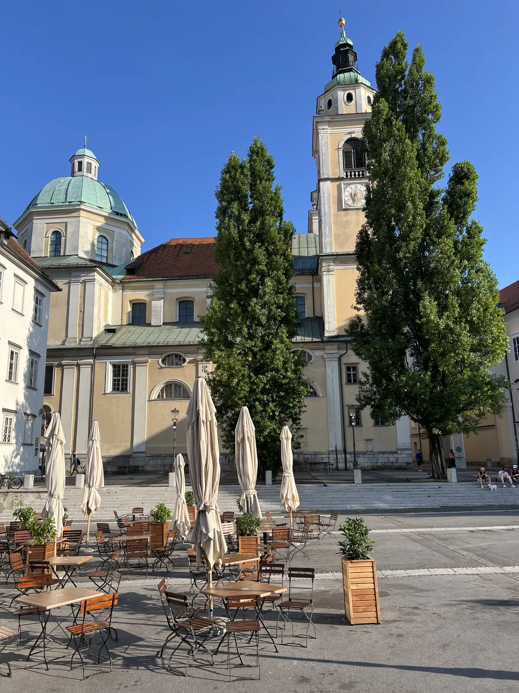
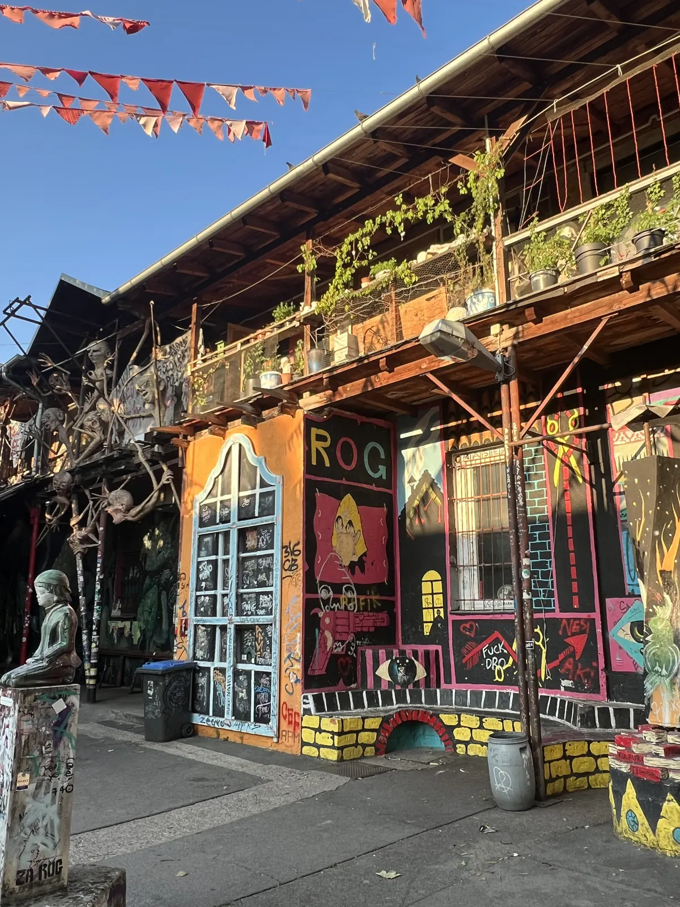
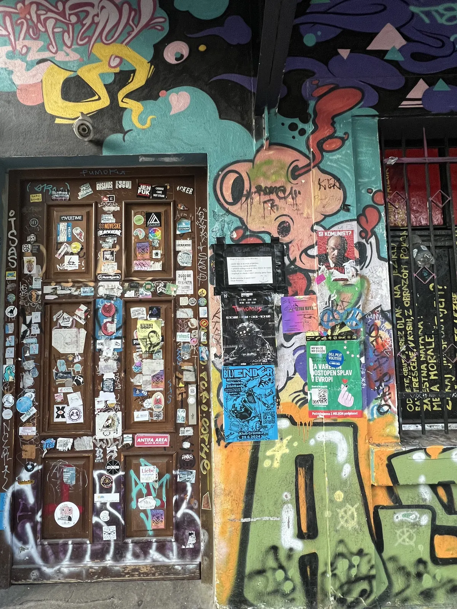
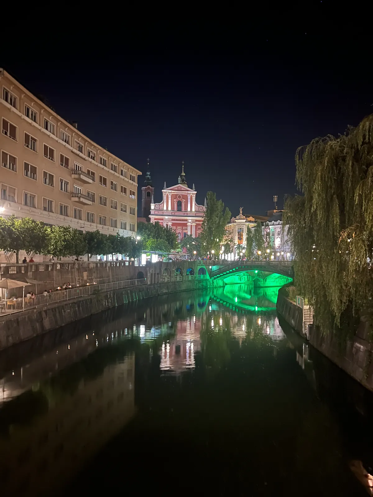
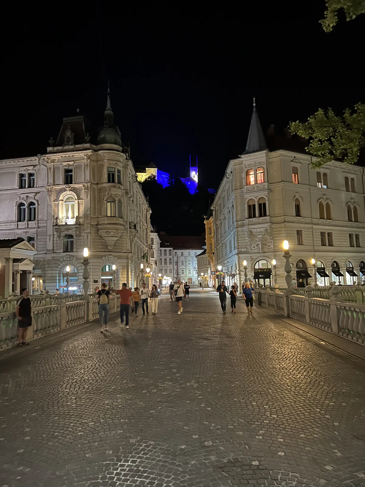

🇸🇮 Ljubljana Guide: 13 places – Central Market, Plečnik, castle, Metelkova & hidden gems

Table of contents
Ljubljana is small, green and car-free in the old town: cafés by the river, dragons on bridges and an architect who shaped the city. Two days are plenty, three are relaxed.
This guide shows the must-sees, the places for locals and everything you need to know about getting there. Prices and times are guidelines (2026).
🗺️ Map: all 8 places
My story in Ljubljana
I was in Ljubljana in 2024 – the greenest capital I know: car-free, everything on foot, cafés by the river. My advice from experience: the central market in the morning, sit by the river at lunch, in the evening to Metelkova, the colourfully painted former barracks full of bars.
This guide contains affiliate links (GetYourGuide, Omio). If you book through them I earn a small commission – you never pay a cent more. Prices and opening hours change – double-check before you go.
🆓 Free things to do
6 places in Ljubljana you can enjoy without an entry fee or completely free (for some, only a part costs extra, e.g. a tower or museum):
At a glance
Getting to Ljubljana
Ljubljana airport (Brnik) lies about 25 km to the north; buses and shuttles run into the city, check current timetables beforehand. By train you reach Ljubljana from Austria (Villach, Vienna) and Italy, by coach from Zagreb, Trieste and Munich. The old town is small and car-free, you do not need a car.
1. Must-sees
Central market & Plečnik arcades🆓 Free to experience
My advice: the central market in the morning. Jože Plečnik designed the riverside colonnades (built 1939–44); today there are stalls, cafés and snacks. On Fridays from spring to autumn restaurants from all over the country cook at the market – the “Open Kitchen” (Odprta kuhna).
Dragon Bridge & Triple Bridge🆓 Free to experience
A dragon sits everywhere – the city’s coat of arms. According to legend Jason and the Argonauts defeated it here. The Triple Bridge is by Plečnik.


Ljubljana Castle🆓 Free to experience
You reach the castle hill on foot in about 10–20 minutes or by funicular. Many areas and viewpoints are free; museum and tower charge admission.
Café in the Nebotičnik
For the view from above: the café in the Nebotičnik, one of the first skyscrapers in Europe. The 360° view and the kremšnita are great; service can be slow and the lift is narrow.
Prešeren Square & old town🆓 Free to experience
Prešeren Square is the heart of the city with the monument to the poet France Prešeren, the Triple Bridge and the pink Franciscan Church. The old town on the river is car-free, full of cafés and shops.
Come in the evening when the squares come alive.
Tip: Come in the evening when the squares come alive.


Cathedral & town hall🆓 Free to experience
The Baroque cathedral has bronze doors with reliefs and a large dome. The town hall lies on Town Square with the Robba Fountain. A short visit is worthwhile.
Plan 30 to 60 minutes.
Tip: Look at the bronze doors.

Tivoli Park & Rožnik🆓 Free to experience
Tivoli Park is the city’s large green lung with avenues, lawns and playgrounds. Behind it rises Rožnik hill with hiking trails and an inn. A good trip for nature in the middle of the city.
Take comfortable shoes.
Tip: Take comfortable shoes.
Slovenian cuisine: Kranjska klobasa, štruklji & kremšnita
Try Kranjska klobasa (Carniolan sausage), štruklji (filled dough rolls), jota (stew) and kremšnita. A speciality is the “Open Kitchen” market on Fridays in summer (check dates beforehand). Slovenian wines go with it.
Prices change; ask beforehand.
Tip: Try the local sausage and the kremšnita.
2. Hidden gems & evening
Metelkova💎 Hidden gem
In the evening to Metelkova: the colourfully painted former barracks full of bars, clubs and street art.
Tip: Come by day for the graffiti and stay alert in the evening – do not go deeper into the courtyards alone at night.


Lunch by the river
Sit by the river at lunch: cafés and terraces along the Ljubljanica – that is the essence of Ljubljana.


Plečnik House & National Library💎 Hidden gem
Jože Plečnik shaped the cityscape: besides bridges and arcades he created the National Library with its unusual façade. The Plečnik House shows his home and studio (check opening times beforehand).
If you like architecture, plan half a day for Plečnik.
Tip: Plan half a day for Plečnik.
Day trip: Postojna Cave & Predjama💎 Hidden gem
Postojna Cave is a huge stalactite system that you explore by small train and on foot; about 50 kilometres from Ljubljana. Predjama Castle lies in a rock face and is just a few kilometres further. Book tickets online (check prices and times beforehand).
Plan half a day to a whole day.
Tip: Book tickets online and plan half a day.
Day trip: Škocjan Caves & Piran💎 Hidden gem
The Škocjan Caves are a UNESCO World Heritage site with enormous canyons. On the coast lies Piran, a Venetian-influenced harbour town that combines well with Koper. Plan travel and times beforehand.
Both destinations suit a long day with car or tour.
Tip: Plan a long day with car or tour.
What makes Ljubljana special
The Romans already had a town here called Emona. After a severe earthquake in 1895 Ljubljana was rebuilt in many parts, and many Art Nouveau façades date from that time. The architect Jože Plečnik shaped the city’s present face – the Triple Bridge and the market colonnades are his.
From here Bled and the coast (see my guides to Bled and Koper) are one to two hours away.
Where to stay
- Old town: river, market and cafés on your doorstep – quiet because car-free.
- Near the station: cheaper, 15 minutes on foot to the centre.
- Metelkova area: alternative and loud at weekends.
📍 Save this guide to Google Maps
1. Quick: open as a route
2. Permanent: as your own map (2 minutes)
- Download the file with all pins (KML button below).
- Open Google My Maps → “Create a new map” → “Import” → choose the file.
- Done – every place sits exactly where it should, with number, tip and a link back to the guide.
- In the Google Maps app the map appears under “Saved” → “Maps”, also on the go.
⬇️ All pins for Google Maps (KML) ⬇️ Download place list (CSV)
3. Save one by one
Your plan
Day 1: Two days in Ljubljana
- Morning – Central Market and Plečnik arcades
- Late morning – old town, Prešeren Square, Dragon Bridge
- Midday – by the river
- Afternoon – Ljubljana Castle
- Evening – Nebotičnik, Metelkova
FAQ
How many days do you need in Ljubljana?
Two days cover the city, three to four with a trip to Bled or the coast.
Is Ljubljana expensive?
Moderate. The market and many viewpoints cost nothing, castle and museums charge admission.
Do I need a car?
No. The old town is car-free, and there are buses and trains to Bled and the coast.
🗺️ All places on my map → More guides and reels on Instagram: @hiddengem.atlas
Share this guide: On WhatsApp